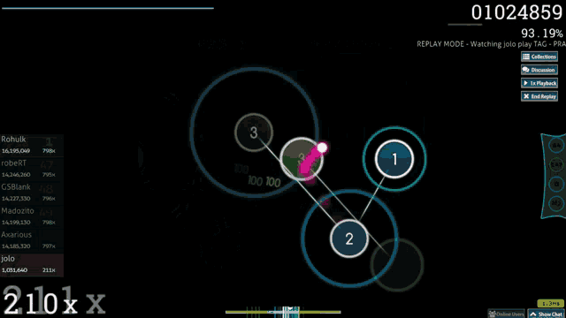
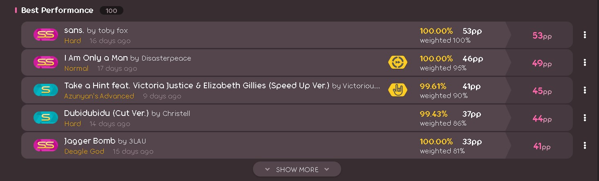

KmKatsuko's Osu! Profile:
U can access his Osu! official profile here
And u can click here to download the best replay of him till now (11/01/2025)

"KmKatsuko" is a brazilian Osu! player, top 1 million in the global standing and one of the bests in Osu!Taiko and Osu!Mania and its improving his skills in Osu!Standart

Here you can see some of his bests scores in Osu!Standart

"KmKatsuko"Don't care so much with him PP (Perfomance Points) at all, his focus is on getting a bunch of high scores on score-boards and getting game's badges/medals